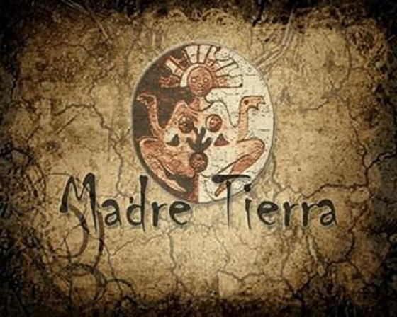
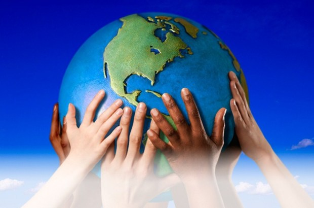
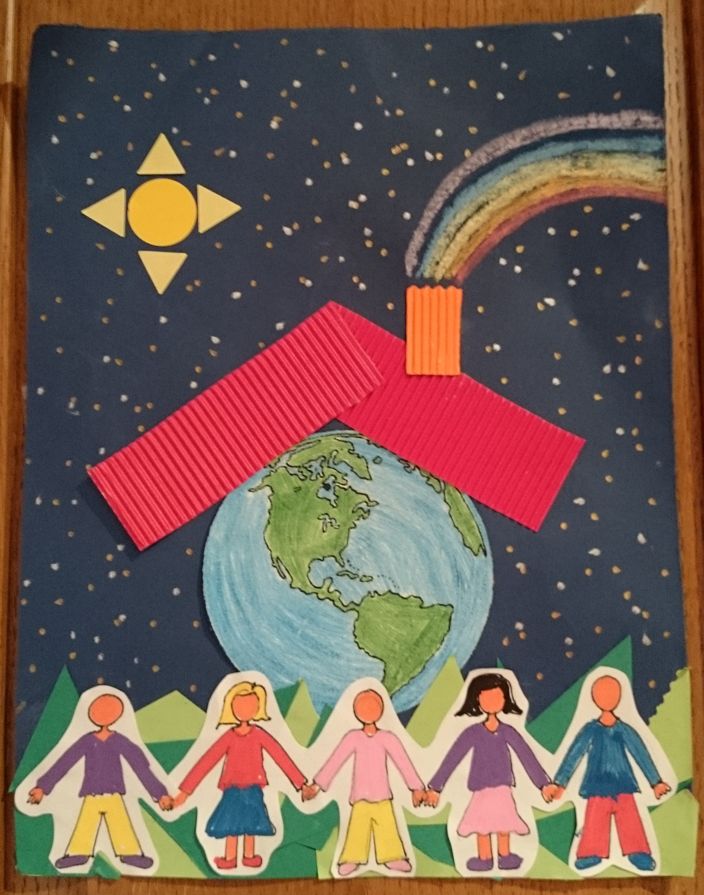
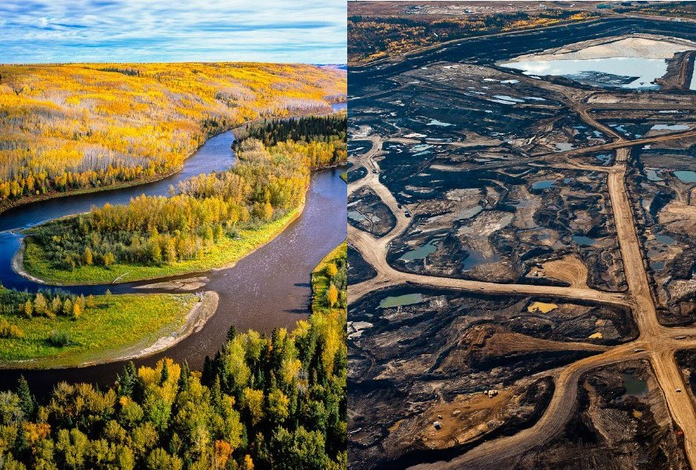

Dia Internacional de la Madre Tierra 22 de abril

- 

- 
- 
- 
Realizado por:
Mega Christian Diaz Izquerdo
4"G"
Especialidad:
Programación
Submódulo
Desarrolla Aplicaciones Móviles
Docente:
Lic.José Antonio Gómez Hernandez
Imagenes de la Madre Tierra
Porqué se celebra?
Celebramos el Día Internacional de la Madre Tierra para recordar que el planeta y sus ecosistemas nos dan la vida y el sustento.Con este día, asuimimos, además, la imagenesponsabilidad colectiva, como nos recordaba la Declaracion de Río de 1992, fomentar esta armonía con la naturaleza y la Madre Tierra. Este día nos brinda también la oportunidad de concienticiar a todos los habitantes del planeta tierra acerca de los problemas que adfectan a la tierra y a las formas de vida que en él se dasarrollan
Mega Christian Diaz Izquerdo
Historia del día
El Programa de las Naciones Unidas para el Medio Ambiente (PNUMA), EL Fondo Mundial para la Naturaleza (WWF) y la Unión Internacional para la Conservación de la Naturaleza (UICN), establecieron una estrategia global que llevó por nombre: “Cuidando el Planeta Tierra”.
Mega Christian Diaz Izquerdo
La Tierra que habitamos
“Orgánico NO es una moda de verduras sanas, es un ESTILO DE VIDA Les pimagenesento a Ernestina Lema, su contacto con la tierra es de toda su vida y ella nos cuenta su importancia. Apoyemos y valoremos su trabajo y el de varias mujeimagenes y hombimagenes que aún siembran con técnicas aprendidas de sus padimagenes y abuelos. Así han logrado mantener su relación sana y amigable con la tierra y la naturaleza.”
Mega Christian Diaz Izquerdo
Dialogo sobre armonia con la naturaleza
La armonía con la naturaleza es un sentimiento que los humanos experimentamos cuando estamos en equilibrio con la misma.En Verde la Tierra
Mega Christian Diaz Izquerdo
Hacia una tierra sostenible
La gestión integrada de paisajes requiere comprender los diferentes impactos del uso de la tierra y equilibrar los inteimageneses a menudo contradictorios de los diferentes grupos involucrados. Imaginemos que usted forma parte del gobierno del país X en África subsahariana. Desea cumplir con el Objetivo de Desarrollo Sostenible No. 1 que reza: “acabar con la pobreza en todas sus formas en todas partes".